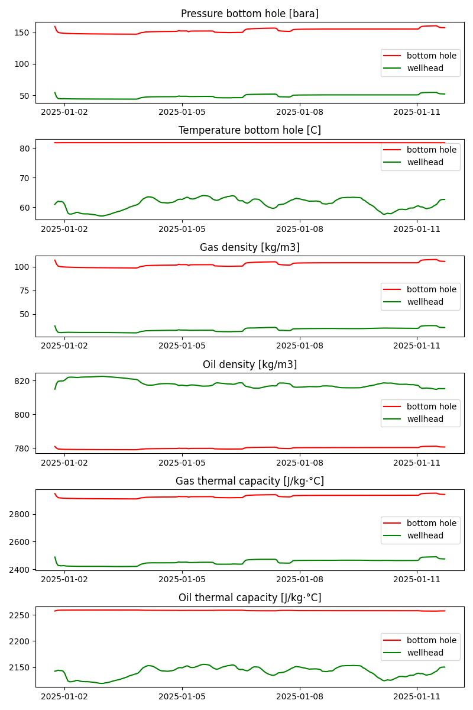

Note
Go to the end to download the full example code.
Calculate fluid properties given pressure and temperature
The calculation of fluid properties is a fundamental component of mass balance and other methods of conservation. The goal of this feature is to calculate the fluid properties given the pressure and temperature conditions and the composition of the fluid itself. Equation of state simulators output a fluid file that is a table of the fluid properties for a range of pressure and temperature conditions. The input to these simulators is the composition of the fluid obtained from lab tests. For this specific feature, the input fluid file is a .tab file used by OLGA, a transient multiphase flow simulator.
import pandas as pd
import matplotlib.dates as mdates
import matplotlib.pyplot as plt
import pickle
from indsl.oil_and_gas.live_fluid_properties import retrieve_fluid_properties
df = pd.read_csv("../../datasets/data/press_temp_bh&wh.csv")
# Create DataFrame with that as index
index = pd.date_range(start="2025-01-01 18:00", periods=240, freq="h")
df.index = index
pvt_data = pd.read_csv("../../datasets/data/pvt_data.csv")
pvt_data.attrs["file_type"] = "tab"
pbh = df.iloc[:, 0] * 100000
tbh = df.iloc[:, 1]
pwf = df.iloc[:, 2] * 100000
twf = df.iloc[:, 3]
pbh.name = "Pressure bottom hole [bara]"
pwf.name = "Pressure wellhead [bara]"
tbh.name = "Temperature bottom hole [C]"
twf.name = "Temperature wellhead [C]"
gas_den_bh = [retrieve_fluid_properties(pbh, tbh, pvt_data, param="ROG"), "red"]
gas_den_wh = [retrieve_fluid_properties(pwf, twf, pvt_data, param="ROG"), "green"]
liq_den_bh = [retrieve_fluid_properties(pbh, tbh, pvt_data, param="ROHL"), "red"]
liq_den_wh = [retrieve_fluid_properties(pwf, twf, pvt_data, param="ROHL"), "green"]
hl_bh = [retrieve_fluid_properties(pbh, tbh, pvt_data, param="CPHL"), "red"]
hl_wh = [retrieve_fluid_properties(pwf, twf, pvt_data, param="CPHL"), "green"]
hg_bh = [retrieve_fluid_properties(pbh, tbh, pvt_data, param="CPG"), "red"]
hg_wh = [retrieve_fluid_properties(pwf, twf, pvt_data, param="CPG"), "green"]
pbh = df.iloc[:, 0]
pwf = df.iloc[:, 2]
pbh.name = "Pressure bottom hole [bara]"
pwf.name = "Pressure wellhead [bara]"
pbh = [pbh, "red"]
tbh = [tbh, "red"]
pwf = [pwf, "green"]
twf = [twf, "green"]
data = [[pbh, pwf], [tbh, twf], [gas_den_bh, gas_den_wh], [liq_den_bh, liq_den_wh], [hg_bh, hg_wh], [hl_bh, hl_wh]]
fig, ax = plt.subplots(figsize=(8, 2 * len(data)), nrows=len(data), ncols=1)
ax = ax.ravel()
for idx, i in enumerate(data):
ax[idx].plot(i[0][0], color=i[0][1], label="bottom hole")
ax[idx].plot(i[1][0], color=i[1][1], label="wellhead")
ax[idx].set_title(i[0][0].name)
ax[idx].legend()
ax[idx].xaxis.set_major_locator(mdates.DayLocator(interval=3))
ax[idx].xaxis.set_major_formatter(mdates.DateFormatter("%Y-%m-%d"))
plt.tight_layout()
plt.show()
Total running time of the script: (0 minutes 0.796 seconds)